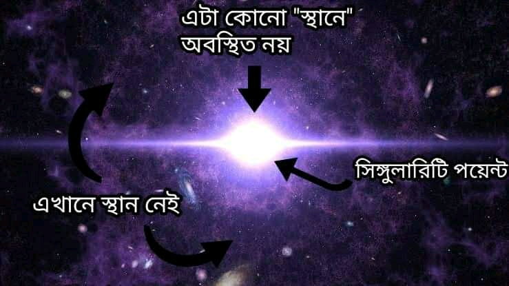
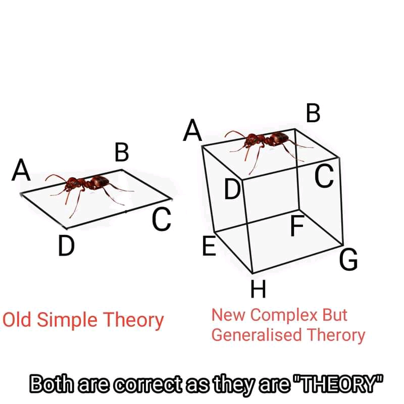
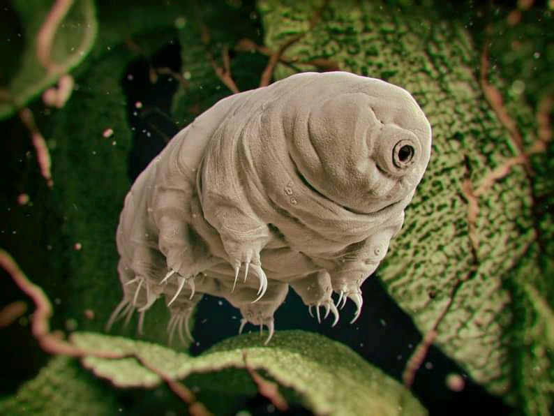
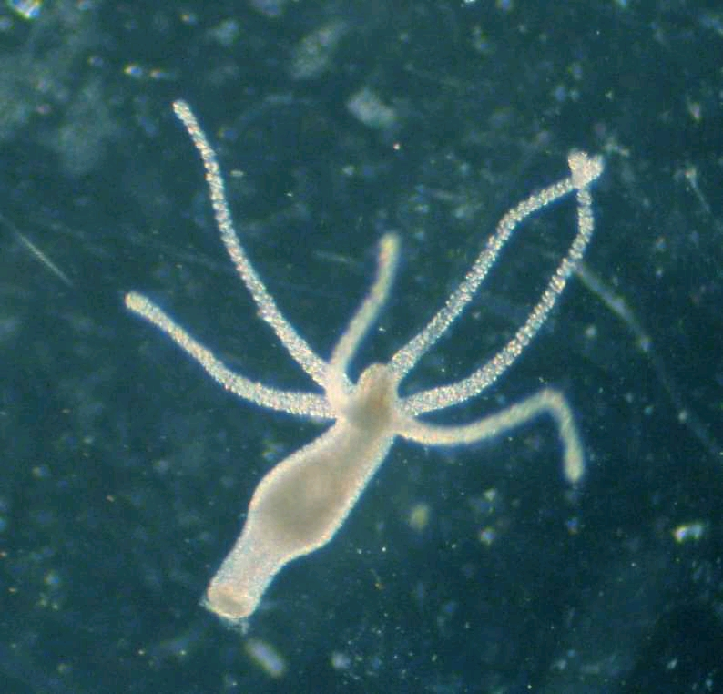
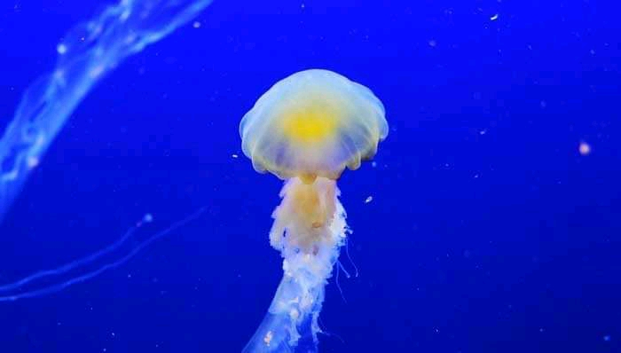
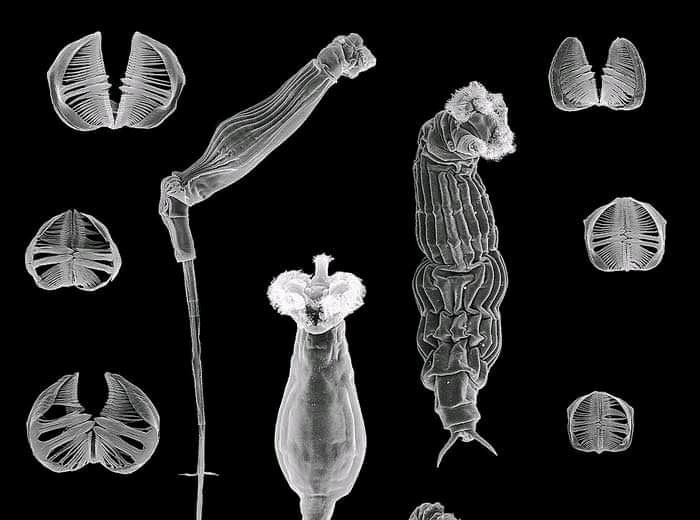
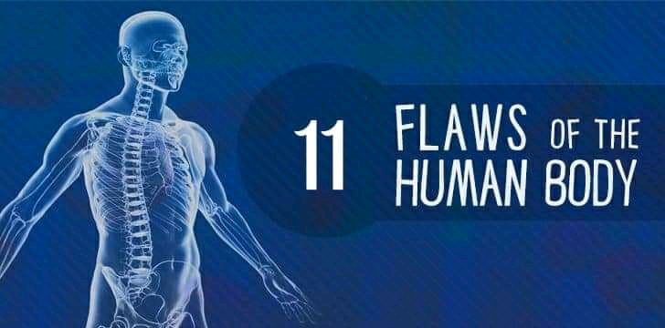

আমাদের মহাবিশ্বের মাত্র ৫% বস্তু আমাদের পরিচিত বস্তুকনা দিয়ে গঠিত যা আমরা দেখতে পারি অথবা যন্ত্রে শনাক্ত করতে পারি। বাকি ৯৫% আমাদের অজ্ঞাত। এর মধ্যে ৬৮% হল ডার্ক এনার্জি যা আমাদের মহাবিশ্বকে সম্প্রসারিত করে এবং বাকি ২৭% হল ডার্ক ম্যাটার যা মহাকর্ষীয় টান তৈরি করে। এখন মহাকর্ষীয় টান যেহেতু ভরযুক্ত বস্তুই করতে পারে তাই ধারনা করা হয় ডার্ক ম্যাটারেরও ভর রয়েছে যা প্রকৃতপক্ষে অদৃশ্য ভর। ডার্ক ম্যাটারের অস্তিত্ব সর্বপ্রথম ধারনা করেন ফ্রিৎস জুইকি ১৯৩৩ সালে। তবে ১৯৩২ সালে ইয়ান ওর্টের পরীক্ষায়ও ডার্ক ম্যাটারের আভাস ছিলো। তারা বিশাল মহাজাগতিক বস্তু যেমন গ্যালাক্সির মোট ভর মহাকর্ষীয় সূত্র দ্বারা নির্ণয় করেন। এরপর ঐ মহাজাগতিক বস্তুর অন্তর্গত আমাদের জন্য দৃশ্যমান সকল কিছুর ভর যোগ করে দেখেন যোগফল পূর্বে প্রাপ্ত মোট ভরের চেয়ে অনেক কম। তারমানে দৃশ্যামান বস্তুর ভর ছাড়াও অদৃশ্য কোনো বস্তুর ভর রয়েছে যা প্রবল মহাকর্ষীয় টান তৈরি করছে। ডার্ক ম্যাটারের অস্তিত্ব আবার উঠে আসে গ্রাভিটেশনাল লেন্সিংয়ে। পর্যাপ্ত ভর না থাকা সত্ত্বেও কোনো মহাকর্ষীয় বস্তু যখন তীব্রভাবে আলোকে বাকিয়ে গ্রাভিটেশনাল লেন্সিং তৈরি করে তখন সেখানে অদৃশ্য ভরের উপস্থিতি বোঝা যায়। এখানে বলে রাখা ভালো, এই মহাকর্ষীয় টানের পরিমান এতোটাই কম যে তাকে ব্লাকহোল বলা যায় না। তবে গ্যালাক্সির সকল নক্ষত্র গ্যালাক্সিতে আবদ্ধ রাখতে এই টানের ভূমিকা রয়েছে। গ্যালাক্সির প্রান্তীয় নক্ষত্রগুলোর বেগ এতো বেশি হয় যে গ্যালাক্সাির জ্ঞাত ভরের মাধ্যমে সৃষ্ট মহাকর্ষীয় টান তাকে আটকে রাখতে পারার কথা না। তাও ঐ বেগে ঘুরেও যেহেতু নক্ষত্তগুলো গ্যালাক্সিতে আটকে আছে অতএব গ্যালাক্সির মহাকর্ষীয় টান অবশ্যই বেশি। কিন্তু টানের জন্য দায়ী ভরটা যে অদৃশ্য! এই ভর আমাদের জ্ঞাত ভরের চেয়ে ৪০০ গুন বেশি। স্বাভাবিক আমাদের গ্যালাক্সির কেন্দ্রে অবস্থিত ডার্ক ম্যাটারের ভর কেন্দ্রের ভরের দশগুন হতে পারে। ডার্ক ম্যাটার আমাদের সুপরিচিত ব্যারিয়ন দ্বারা গঠিত নয়। এটি নন ব্যারিয়নিক ম্যাটার হওয়ায় এটি ফোটন,এক্সরে,গামা রে শোষন/প্রতিফলন করে না। ফলে আমাদের চোখ দূরে থাকুক যন্ত্রেও এটি শনাক্ত করা সম্ভব হয়নি। এটির ব্যাখ্যা হিসবে আপাতত তিন ধরনের পার্টিকেল হাইপোথিসিস আছে। একটি হল স্টেরাইল নিউট্রিনো, যা নিউট্রিনোর চেয়েও অত্যন্ত কম বিক্রিয়াশীল হবে। নয়তো এটি কোনো এক্সিয়ন বা উইম্প ( Weakly Interactive Massive Particle)। ডার্ক ম্যাটার অ্যান্টিম্যাটারও নয়। সেক্ষেত্রে এটি সাধারন ম্যাটারের সাথে বিক্রিয়া করে গামা রে নির্গমন করতো যা কখনো দেখা যায়নি। ডার্ক ম্যাটারের বিপক্ষের যুক্তি হতে পারে যে আমাদের প্রচলিত মহাকর্ষ তত্ত্বে কিছু সংশোধন প্রয়োজন। ডার্ক ম্যাটারের অস্তিত্বের প্রমান যেহেতু আমরা মহাকর্ষীয় টান বিবেচনা করেই পাই সুতরাং হতে পারে ভর ছাড়াও অন্য কোনো কারনে মহাকর্ষীয় টান তৈরি হয় যা আমাদের বর্তমান তত্ত্বে ব্যাখ্যা হয় না। এরকম ক্ষুদ্র সম্ভাবনা রয়েছে যে বর্তমান মহাকর্ষীয় তত্ত্ব সর্বজনীন নয়। সেক্ষেত্রে হতে পারে ডার্ক ম্যাটার বলে আসলে কিছুই নেই।
মহাবিশ্বের কেন্দ্র
প্রথমত আমাদের মিসকনসেপশন তৈরি করে বিগ ব্যাং এর উপর ভিডিওগুলো (যা আসলে কম্পিউটার সিমুলেশন)। এসব ভিডিওতে দেখানো হয়, বিগ ব্যাং যে বিন্দু থেকে হবে সেটা গোলকসদৃশ এবং সেটা কোনো একটা "স্থানে" অবস্থিত। এখন বড় কথা হলো উপরোক্ত দুটোই ভুল। বিগ ব্যাং এর পূর্বে "স্পেস" টাও তৈরি হয়নি। তাই কোন "স্থানে" বিগ ব্যাং হলো সেই প্রশ্ন তো অবান্তর যেহেতু "স্থান" বিগ ব্যাং এর পরেই তৈরি হয়েছে। দ্বিতীয়ত, মহাবিশ্বের জন্মের জন্য সিংগুলারিটি বিন্দুটি গোলক হিসেবে দেখেন যার মাত্রা তিনটি। কিন্তু প্রকৃতপক্ষে মহাবিশ্ব দশমাত্রিক (স্ট্রিং থিওরিমতে ২৬ মাত্রিক)। তাই গোলকের যেমন একটা কেন্দ্র থাকে মহাবিশ্বের তেমন কোনো কেন্দ্রই নেই। দ্বিমাত্রিক বৃত্তে এবং ত্রিমাত্রিক গোলকে একটি মাত্র কেন্দ্র থাকে। কিন্তু মহাবিশ্বের মাত্রা এর চেয়ে বেশি হওয়ার এর কেন্দ্র অসংখ্য। মহাবিশ্বের প্রতিটি "স্থান" প্রতি মুহুর্তে প্রসারিত হচ্ছে। যেকোনো বিন্দুর সাপেক্ষে অন্য যেকোনো বিন্দু সমান বেগে দূরে সরছে। অর্থাৎ মহাবিশ্বের প্রতিটি বিন্দুকেই মহাবিশ্বের কেন্দ্র বিবেচনা করা যায়। সবচেয়ে সাদৃশ্যপূর্ণ উদাহরণ হলো বেলুন কিছু বিন্দু দাগিয়ে বেলুন ফুলালে দেখা যাবে যেকোনো দুটি পয়েন্টের সাপেক্ষ বেগ সমান। এখন পয়েন্টটি হল দ্বিমাত্রিক কিন্তু বেলুনটি ত্রিমাত্রিক। একারণে ওই পয়েন্টের কাছে মনে হবে ওই পয়েন্টই ফুলতে থাকা বেলুনের কেন্দ্র। তেমনি আমরা ত্রিমাত্রিক কিন্তু মহাবিশ্বের তিনটির চেয়েও বেশি মাত্রা আছে। মাত্রাগত সীমাবদ্ধতার কারণে আমাদের কাছে মনে হয় আমরা যে স্থান হতে পর্যবেক্ষণ করবো সেটিই মহাবিশ্বের কেন্দ্র। যেকোনো পয়েন্টকেই মহাবিশ্বের কেন্দ্র বিবেচনা করা যায়। তাই বলা যায়, মহাবিশ্বের নির্দিষ্ট কোনো কেন্দ্র নেই।

থিওরি জেনারালাইজেশন
ভূমিকাঃ বিভিন্ন ঘটনার বৈজ্ঞানিক ব্যাখ্যা দেয়ার জন্য কিছু হাইপোথিসিস অবতারনা করা হয়। যে হাইপোথিসিস বহু পরীক্ষনে টিকে যায় এবং ভবিষ্যদ্বানী করতে পারে যা পরবর্তীতে মিলে যায় সেই হাইপোথিসিস পরিনত হয় থিওরিতে। থিওরি হওয়ার জন্য কি কি বৈশিষ্ট্য লাগবে তার জন্য দেখুনঃ Scientific Theory | Wikipedia । এখন থিওরি যেহেতু বহু পর্যবেক্ষণ ও পরীক্ষায় প্রমানিত তাই থিওরি ভুল হওয়া সম্ভব নয়। কিছু ক্ষেত্রে থিওরিতে সীমাবদ্ধতা থাকতে পারে অর্থাৎ ব্যতিক্রমী ক্ষেত্রে থিওরী কাজ করবে না এমন হতে পারে। সেক্ষেত্রে আরো জেনারালাইজড থিওরি উদ্ভাবন করতে হয়। এই জেনারালাইজেশন নিয়েই আজকের আর্টিকেল।
একটা কাগজে পিপড়া হাঁটতেছে। তার কাছে পরিবেশ দ্বিমাত্রিক লাগবে। সে ABCD ক্ষেত্রে কার্যকর একটি থিওরি আবিষ্কার করলো। কিন্তু কিছুদিন পর সে আরো আবিষ্কার করলো পরিবেশ ত্রিমাত্রিক এবং সে ABCDEFGH ক্ষেত্রে আছে। এখন তার থিওরিটা দিয়ে ABCD নিখুঁত ব্যাখ্যা করা গেলেও ABCDEFGH ব্যাখ্যা করা যাচ্ছে না। এখন পিপড়া নতুন একটা থিওরি বানাবে যা ABCDEFGH এ কার্যকর হবে আবার একই সাথে ABCDতেও সঠিক ফল দিবে। এখন নতুন থিওরিটা হলো পুরানটার জেনারালাইজড থিওরি। লক্ষ্য করুন, নতুনটা আসায় কিন্তু পুরানটা ভুল প্রমানিত হয়নি। পুরান থিওরিটা এখনো ABCD ক্ষেত্রের জন্য পারফেক্ট। নতুন থিওরিটা একটু কমপ্লেক্স এবং ABCD ক্ষেত্রে ওটার অনুসিদ্ধান্ত হিসেবে আবার পুরান থিওরিটা বেরিয়ে আসে। এভাবেই থিওরি জেনারাইলেশন সংঘটিত হয়। বর্তমান সময়ে বিভিন্ন থিওরি জেনারালাইজড হয়েছে। যেমন কেপলারের তৃতীয় সূত্রটি পরবর্তীতে নিউটনের মহাকর্ষ সূত্রের অনুসিদ্ধান্ত হিসেবে বেরিয়ে আসে। কুলম্বের সূত্রের সীমাবদ্ধতা দূর করতে আসে গাউসের সূত্র। গাউসের সূত্রের বিশেষ রুপ হিসেবে কুলম্বের সূত্র পাওয়া যায়। কোনো সূত্রই শেষ পর্যন্ত ভুল প্রমানিত হয়নি, সবগুলো নিজ নিজ ক্ষেত্রে সফল। এখানে উল্লেখ্য, সূত্র থিওরিরই অংশ। অনেকগুলো সূত্র নিয়ে একটি থিওরি গঠিত হয়। সূত্র থিওরির চেয়ে বড় হয় না। বিস্তারিতঃ What is law | Livescience
অনেকে আবার দাবি করতে পারেন উইকিপিডিয়ায় বাতিল করা থিওরিগুলোর লিস্ট আছে। লিংকঃ Supersaded theories | Wikipedia সেক্ষেত্রে বলবো আপনি দাবি করলে বা কয়েকজন মানলেই সেগুলা থিওরি হয়ে যায়নি। যেগুলা বাতিল হয়েছে ওগুলো মোটেও থিওরির রিকোয়ারমেন্ট পূরন করতে পারেনি, বরং অপপ্রচারের কারনে থিওরি হিসেবে বিবেচিত হয়েছিলো। মানুষ বিভ্রান্তকারী এসব ছদ্মথিওরির মধ্যে আছে ফ্লোজিস্টন থিওরি (Phlogiston Theory) যা আদতে একটি হাইপোথিসিস। রেফারেন্সঃ Phlogiston | Brittanica
বর্তমান বিজ্ঞানীদের লক্ষ্য রিলেটিভিটি থিওরি আর কোয়ান্টাম থিওরি জেনারালাইজ করে কোয়ান্টাম গ্রাভিটি গঠন করা। যারা দাবি করেন বিজ্ঞান পরিবর্তনশীল আজ একটা বলে কাল একটা বলে সেই দাবি পাল্টান। বিজ্ঞান পরশু বলতো আলো তরঙ্গ, কাল বলতো আলো কণা, আজ বলে আলো কণা ও তরঙ্গ দুটোই। বিজ্ঞানের সত্য পরিবর্তন হয় না, পরিবর্ধন হয়, পরিমার্জন হয় এবং বিস্তৃতি লাভ করে।
থিওরি-ফ্যাক্ট-সূত্র এর সম্পর্ক জানতেঃ
Theory | Discovery এবং থিওরি | বিজ্ঞানযাত্রা

রেফারেন্সঃ
Theory VS Law | MasterClass
অমর জীব
১. টার্ডিগ্রেড(সমুদ্র ভালুক): টার্ডিগ্রেডকে এযাবৎকালের শ্রেষ্ঠ অমর প্রানী বিবেচনা করা হয়। ৬০ কোটি বছর ধরে এরা পৃথিবীতে টিকে আছে। এরা তীব্র রেডিয়েশন সহ্য করতে পারে। পানির বাষ্পবিন্দুর(১০০°সে) বেশি যে তাপমাত্রায় কোষের সব পানি বাষ্পীভূত হওয়ার কথা সেই উচ্চ তাপমাত্রাও সহ্য করতে পারে এমনকি পরম শূন্য তাপমাত্রার খুব কাছাকাছি তাপমাত্রায়ও(-২৭২.৮°সেলসিয়াস) জীবিত থাকতে পারে। এদের উল্লেখযোগ্য ক্ষমতা হলো ক্রিপ্টোবায়োসিস যার মাধ্যমে এরা বিপাক ক্রিয়া থামিয়ে রাখে এবং ফলস্বরূপ কোনো খাদ্য/শক্তির উৎস ছাড়া অনির্দিষ্টকাল পর্যন্ত জীবিত থাকতে পারে। মহাশূন্যে কোনোরকম সুরক্ষা ছাড়াও টিকে থাকা একমাত্র প্রানী এই টার্ডিগ্রেড। মহাসাগরের গভীরতম বিন্দুর তুলনায় ছয়গুন চাপেও টার্ডিগ্রেডের ক্ষতি হয় না। পানির সংস্পর্শে আসলে এরা পুনরায় বিপাকীয় কার্যাবলি শুরু করে।

২.হাইড্রা: হাইড্রা একটি অতিপরিচিত প্রানী। এর পুনরুৎপাদন ক্ষমতা বিস্ময়কর। এর শরীরের যেকোনো অংশ কেটে ফেললে সেই কাটা অংশ পুনরায় গজিয়ে যায়। এর শরীরের অধিকাংশ কোষই স্টেম কোষ যা অন্য কোষে রুপান্তরিত হয় দেহ নবায়ন/ক্ষয়পূরন করতে পারে। তবে সবচেয়ে জরুরি হল এদের প্রজনন। মানবদেহে কোষের মৃত্যু পূর্বনিশ্চিত অর্থাৎ নির্দিষ্ট সময় পর কোষগুলো বার্ধক্যে যেতে থাকে কিন্তু হাইড্রায় এমন নয়। যদি এরা যৌন প্রজনন করে তাহলে এরা মৃত্যু ঠেকাতে পারে না। কিন্তু অযৌন প্রজননের মাধ্যমে এরা অনন্তকাল টিকে থাকতে পারে। হাইড্রা বিবর্তনে অমরত্বকে প্রত্যাখ্যান করেছে একটি নির্দিষ্ট সময়ের পরে এরা অযৌন প্রজনন আর করে না এবং বলা যায় স্বেচ্ছামৃত্যু গ্রহন করে।

৩. অমর জেলিফিশঃ হাইড্রা এবং এই প্রজাতিটি অভিন্ন শ্রেনী Hydrozoa এর অন্তর্গত। বৈজ্ঞানিক নামঃ Turritopsis doohmii। এই প্রজাতির উল্লেখযোগ্য বৈশিষ্ট্য হল ঋনাত্নক বার্ধক্য। ধনাত্মক বার্ধক্যে সময়ের সাথে প্রানী বৃদ্ধ হয়, বয়স বাড়ে। কিন্তু এই প্রজাতি সময়ের সাথে আরো ইয়ং হতে পারে। যখন এরা যথেষ্ট বৃদ্ধ হয়/আহত হয়/অসুস্থ হয় তখন এরা সিম্পলি এদের পলিপ দশা (জীবনের একটা স্টেজ যেটা প্রাপ্তবয়স্কতার পূর্বে আসে)-য় ফিরে যায়। সেখান থেকে আবার বড় হয়, আবার পলিপ দশায় ফিরে যায়, এভাবে চক্রাকারে জীবন চলতেই থাকে চলতেই থাকে। বার্ধক্যরহিত এই প্রানী কারো খাদ্য নাহলে অথবা জটিল রোগে আক্রান্ত না হলে অনন্তকাল বাঁচে।

৪.লবস্টার: লবস্টার সামুদ্রিক জীব এবং মানুষের খাদ্য হিসেবে পরিচিত। তবে লবস্টারেরও অমরত্বের মতো বৈশিষ্ট্য রয়েছে। মানুষ এবং অধিকাংশ জীবের বেলায় কোষ বিভাজনের সময় ক্রোমোজমের টেলোমিয়ার ক্ষুদ্র থেকে ক্ষুদ্রতর হতে থাকে। যতো বেশি বয়স, তত বেশি কোষ বিভাজন, তত ক্ষুদ্র টেলোমিয়ার। একপর্যায়ে টেলোমিয়ার এতো ক্ষুদ্র হয়ে যায় যে তা আর ক্ষুদ্র হতে পারবেনা এবং ফলস্বরূপ কোষ বিভাজন বন্ধ হয়ে যায় এবং সমস্ত কোষ মৃত্যুর দিকে আগাতে থাকে। লবস্টারের এই সমস্যা নেই। তারা টেলোমারেজ নামক এনজাইম ধারন করে যা টেলোমিয়ারের ক্ষয়পূরন করে টেলোমিয়ারকে ক্ষুদ্র হওয়া থেকে রক্ষা করে। যতই কোষ বিভাজন হোক টেলোমিয়ার একই থাকে এবং বার্ধক্য প্রতিহত করে। টেলোমারেজ এনজাইম অন্য প্রানীতেও আছে তবে তা লবস্টারের মতো যথেষ্ট নয়। তবে লবস্টারের আরেকটি প্রতিবন্ধকতা আছে। এটার খোলস। লবস্টার সময়ের সাথে সাথে বাড়তেই থাকে, এর বৃদ্ধি মৃত্যুর আগ পর্যন্ত থামে না। কিন্তু যদি এরা খোলস পাল্টাতে না পারে তাহলে এরা মারা যায়। খোলস পাল্টাতে প্রচুর শক্তির প্রয়োজন হয়, এই শক্তি সঞ্চয় করতে পারলে তবেই এরা বাঁচে। অবশ্য অন্য প্রানীর খাদ্য হয়েও এরা মারা যেতে পারে।
৫. ডেলয়েড: এরা একধরনের জুপ্লাঙ্কটন। চরম পরিস্থিতি যেমন উচ্চ তাপমাত্রা, উচ্চ চাপ, নিম্ন তাপমাত্রায় এরা টিকে থাকতে পারে। পাশাপাশি প্রতিকূল পরিবেশ হলে এরা হাইবারনেশনে গিয়ে নিজেদের শারীরবৃত্তীয় কার্যাবলি সাময়িক বন্ধ রাখতে পারে। শক্তির উৎস ছাড়া দীর্ঘদিন টিকে থাকার কারনে ডেলয়েডও প্রায় অমর বলা যায়।

রেফারেন্সঃ
Forever living Animals | ScienceImmortal Animals | Reader's DigestImmortal Animals | BioExplorer
ত্রুটিপূর্ণ মানবদেহ

জ্ঞান-বুদ্ধির বিবেচনায় মানুষ পৃথিবীর সর্বাপেক্ষা উন্নত জীব। কিন্তু শারীরিক গঠনের বিচার করলে প্রচুর প্রানী তার চেয়েও উন্নত। বিবর্তনের পথে মানুষ প্রচুর অপ্রয়োজনীয় এবং ক্ষতিকর নকশার শিকার। কারন বিবর্তনে সবসময় উপকারী বৈশিষ্ট্যটাই টিকে থাকে না, মাঝেমধ্যে ব্যাড ডিজাইন দিয়েও পরিবেশের প্রেক্ষিতে টিকে থাকা যায়। কিন্তু এই টিকে থাকা তো ভালো থাকা নয়, ব্যাড ডিজাইনের কারনে প্রতিবছর বহু মানুষ বহু রোগে আক্রান্ত হয়, আয়ু কমে আসে প্রায় অর্ধেকে।
১. অন্ধবিন্দুঃ আমাদের চোখের অপটিক নার্ভ রেটিনাতে এসে মিলিত হয়। সমস্যাটা ঘটে এখানেই। যেই স্পটটায় এরা মিলিত হয় সেই স্পটে না আছে কোণ কোষ আর না আছে রড কোষ। ফলে সেই স্পটটা সম্পূর্ণ অন্ধকার হয় এবং ব্লাইন্ড স্পট বা অন্ধবিন্দু তৈরি হয়।
আমরা সাধারণ জীবনে এটাকে টের পাইনা কারন আমাদের মস্তিষ্ক দেখার জন্য দুটি চোখ ব্যবহার করে এক চোখ অন্য চোখের অন্ধবিন্দু ভরাট করে দেয়। কিন্তু এক চোখ বন্ধ করে এক দেড় ফুট দুরত্বের ক্ষুদ্রকায় বস্তু দেখতে গেলে অন্ধবিন্দুর অস্তিত্ব ধরা পড়ে। অক্টোপাস বা স্কুইডের এরকম সমস্যা নেই। তাদের রেটিনায় অন্ধবিন্দু গঠিত হয়না।
২. দুর্বল মেরুদন্ডঃ আমাদের মেরুদণ্ড প্রধানত ডিজাইনড হয়েছে চার হাত পায় চলার জন্য। কোমরের দিকে হাড় তূলনামূলক সংকীর্ণ যা দেহের ভারবহনের উপযোগী নয়। মেরুদণ্ডের যে হাড় পূর্বে কোমড়ের সাথে আনূভমিক ছিল এবং ৯০ডিগ্রি বাঁকতে পারতো সেই হাড়টার রুপান্তরের কারনেই আজ আমরা হাঁটতে সক্ষম। কিন্তু হাড়গুলো এখনো দেহের ভারবহনের মতো যথেষ্ট পুরু নয় যেকারনে প্রতিবছর লক্ষ লক্ষ মানুষ পিঠেব্যাথায় ভোগে।
৩. অপ্রয়োজনীয় পায়ের অস্থি ও অস্থিসন্ধিঃ আমাদের প্রতি পায়ে ২৬ টি হাড় রয়েছে। (কোমর থেকে হিসাব করলে ৩০ টি)। আমাদের পূর্বপুরুষদের গাছে চড়তে এসব হাড় এবং সংশ্লিষ্ট অস্থিসন্ধি প্রয়োজন হয়েছিলো। কিন্তু এখন আমাদের হাঁটা/দৌড়ানোর জন্য এতো অস্থিসন্ধির দরকার হয় না। উপরন্তু এই অতিরিক্ত হাড়গুলো ফ্রাকচার, মচকে যাওয়ার মতো অপ্রীতিকর ঘটনা সৃষ্টি করে।
৪. প্রসবনালীর সংকীর্ণতাঃ পূর্বে মানুষের মস্তিষ্ক ছোট ছিলো, মানবশিশুর মাথাও ছোট ছিলো। কিন্তু বিবর্তনে মানবশিশুর মাথার আকৃতি বৃদ্ধি পেলেও বাড়েনি প্রসবনালীর ব্যাস। নর্মাল ডেলিভারিতে ভয়াবহ প্রসবযন্ত্রণার জন্য দায়ী মানবদেহের এই ত্রুটি।
৫. শুক্রাশয়ের অবস্থানঃ মানবদেহের শুক্রাশয় দেহের অভ্যন্তরের সুরক্ষা পায়নি। শুক্রাণু উৎপাদনে শরীরের তুলনায় বেশি তাপমাত্রা প্রয়োজন হয় তা ঠিক কিন্তু এই তাপমাত্রা দেহের ভিতরে ব্যবস্থাপনা না করে শুক্রাশয়ের মতো গুরুত্বপূর্ণ অঙ্গকে শুধুমাত্র একটা পাতলা চামড়ার সুরক্ষা দেয়া যুক্তিসঙ্গত নয়।
৬. আক্কেল দাঁতঃ তিনটি মোলার দাঁতের পর মুখের অভ্যন্তরে যথেষ্ট জায়গা থাকে না যেন আরো একটি দাঁত উঠতে পারে। অতিরিক্ত এই মোলার দাঁতটি উঠতে গিয়ে যেমন যন্ত্রণা সৃষ্টি করতে পারে তেমনি বিভিন্ন সময়ে সংক্রমিত হওয়ার ঝুঁকি বাড়ায়। উল্লেখ্য, এস্কিমোদের এই অতিরিক্ত দাঁতের সমস্যা নেই।
৭. কক্কিক্স বা পুচ্ছাস্থিঃ মেরুদণ্ডের সর্বশেষ অস্থিটি কক্কিক্স যা লেজের হাড় নামে পরিচিত। মানব ভ্রূণে এই হাড়টি লেজ হিসেবেই থাকে। তবে সাধারনত ভ্রূণের বয়স ৬ সপ্তাহের পর লেজ অপসারন হয়ে অস্থি হিসেবে থেকে যায়। এই অস্থি কিছু টেনডন লিগামেন্ট ধারন ছাড়া দেহের তেমন কোনো কাজে আসে না তবে কক্কিনিডিয়ার মতো রোগ সৃষ্টি করতে পারে। সেক্ষেত্রে কক্কিক্স দেহের বাইরে অপসারণ করতে হয়।
৮. নিকটিটেটিং ঝিল্লি/ লিকা সেমিলুনারিসঃ কিছু প্রানীর ক্ষেত্রে চোখের এই ঝিল্লিটি চোখ পরিষ্কার ও আর্দ্র রাখতে ব্যবহৃত হয়। কিছু প্রানীর এই ঝিল্লি স্বচ্ছ হওয়ায় তারা পানির নিচে দেখতে এটা ব্যবহার করে। কিন্তু মানবদেহে এটা অপ্রয়োজনীয়।
৯. অরিকুলার পেশিঃ এই পেশি অন্য প্রানীর কান নাড়াতে ব্যবহৃত হয়। অন্য প্রানীরা কান নাড়িয়ে প্রধানত মশা মাছি তাড়ায়, মানুষের এই কাজের জন্য হাতই রয়েছে। একারনে বহু প্রজন্মে দীর্ঘকালীন কান নাড়ানোর প্রয়োজনহীনতার কারনে এই পেশিও মানবদেহে অকার্যকর হয়ে উঠেছে।
১০. খাদ্যনালী-শ্বাসনালী ওভারল্যাপঃ মানবদেহে শ্বাসনালী এবং খাদ্যনালী একটি কমন স্থানে উন্মুক্ত হয় যেটা হল ফ্যারিঙ্কস। খাওয়ার সময় খাদ্য যেনো শ্বাসনালীতে না ঢুকে সেজন্য এপিগ্লটিস শ্বাসনালীকে সাময়িক ঢেকে রাখে। কিন্তু এই এপিগ্লটিস যথেষ্ট দ্রুত নয়। প্রত্যেক মানুষই জীবনে কখনো না কখনো এপিগ্লটিসের ধীরতার শিকার হয়েছে এবং পানি বা খাবারের টুকরা শ্বাসনালীকে গিয়ে কাশির উদ্রেক করেছে। বিরল ক্ষেত্রে এপিগ্লটিসের এই ত্রুটির কারনে শ্বাসরুদ্ধ হয়ে জীবনও চলে যেতে পারে।
১১. অ্যাপেনডিক্সঃ অ্যাপেনডিক্স দীর্ঘকাল এক বিতর্ক টিকিয়ে রেখেছে এটা সত্যিই উপকারী না অপকারী তা নিয়ে। ধারনা করা হয় অতীতে সেলুলোজ হজমে এটি ব্যবহৃত হতো। কিন্তু সভ্য মানুষ রান্না না করে শস্যজাতীয় খাবার/সবজি খায় না বলে অ্যাপেনডিক্স পরিত্যক্ত হয়েছে। অ্যাপেনডিক্স যে কিছু উপকার করে তাতে সন্দেহ নেই কারন অ্যাপেনডিক্স উপকারী ব্যাকটেরিয়ার আবাসস্থল। তবে আমাদের দেহের রোগ প্রতিরোধ ব্যবস্থা অ্যাপেন্ডিক্সের ব্যাকটেরিয়াকে আক্রমন করতে পারে এবং সেক্ষেত্রে জীবন ঝুঁকিপূর্ণ হয়ে উঠবে। অ্যাপেনডিক্স ফুলে বার্স্ট করলে মৃত্যুর সম্ভাবনা অত্যধিক।
রেফারেন্সঃ
Blind Spot | BritannicaBlind Spot | WikipediaAppendix | Dignity HealthAppendix | WebMDVestigial Organ | BritannicaHuman Body Design Flaws | GizModoDesign Flaw in Human Body | Nautil